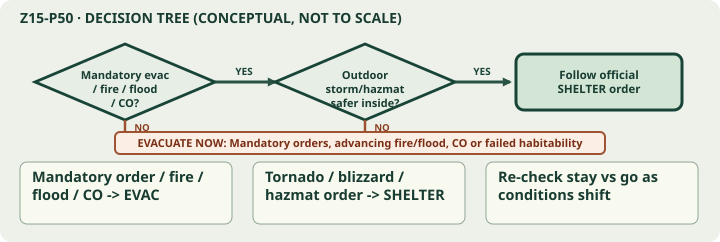

Z15-P50 · Disaster scenarios · New manuscript
Decide objectively between shelter-in-place and evacuation by hazard and official order
Eliminate hesitation by anchoring stay-vs-go decisions to clear hazard physics, official orders, and household vulnerability.
When it applies · Any rapidly developing storm, flood, wildfire, hazmat spill, or prolonged utility collapse.
Equipment · Official local alert channels, printed evacuation triggers, and pre-packed go-bags.

Actions
- EVACUATE IMMEDIATELY whenever authorities issue a mandatory evacuation order, flames/floodwater threaten routes, indoor gas/CO/structural hazards occur, or prolonged utility loss pushes indoor heat/cold/medical batteries past safe floors while roads remain open.[D14, T13, U17]
- SHELTER IN PLACE when moving outside exposes occupants to greater immediate danger than staying inside—such as active Tornado Warnings, lightning/derecho squalls, blinding whiteout blizzards, impassable flash floods, or official short-term hazmat Shelter-in-Place orders.[E24, D03, D10, D15]
- Re-evaluate continuously as conditions evolve: a safe blizzard shelter-in-place on Day 1 can shift into a necessary daylight warming-center evacuation on Day 3 once roads plow open and indoor temperatures fall.[U17, D10]
Failure recognition · Trying to drive across town during an active Tornado Warning, OR stubbornly sheltering in place inside a mandatory wildfire evacuation zone.[D03, D08]
Verify · Confirm household checks official orders first, compares outdoor vs indoor lethality honestly, and revisits stay/go triggers as conditions shift.[D14, E24]
Stop or change course · Official mandatory evacuation orders ALWAYS override personal preference to stay and guard property.[D14, T13]
Evidence and editorial notes
- D03 · FEMA / Ready.gov · Tornadoes (current web edition)
- Section: Tornadoes > Watch vs Warning, Safe Room Selection, and Post-Storm Hazards · Conditions: Developing supercells, Tornado Watches, and Tornado Warnings
Support: Act immediately on a Tornado Warning by moving to a FEMA safe room, storm shelter, basement, or lowest-level small interior room away from windows; protect head/neck from flying debris, never shelter in vehicles/mobile homes or under overpasses, and watch for downed power lines and gas leaks afterward.
Limitations: Outdoor sirens are designed to alert people outdoors and may be inaudible inside insulated homes during storms. · Conflicting evidence: None; aligns with E17 and NWS-TORNADO.
Editorial note: Core tornado shelter-selection and post-storm hazard evidence in Z15. · Specialist reviewer: Meteorology and emergency management
Primary source · checked 2026-11-24 - D08 · FEMA / Ready.gov · Wildfires (current web edition)
- Section: Wildfire Evacuation Tiers, Go-Now Triggers, and Defensible Prep · Conditions: Wildland-urban interface (WUI) communities and forested corridors
Support: Follow local Ready-Set-Go evacuation stages, pre-stage vehicles facing outward with fuel topped off and go-bags loaded during Set/Watch notices, evacuate immediately on Go orders along official open routes, and never return until fire officials lift closures.
Limitations: Fire spread can shift direction in minutes with wind changes; waiting to see flames often leaves exit roads blocked. · Conflicting evidence: None; integrates with T13 and C19.
Editorial note: Grounds wildfire evacuation readiness and route-abort decisions. · Specialist reviewer: Wildland fire management and emergency services
Primary source · checked 2026-11-24 - D10 · FEMA / Ready.gov · Winter Weather (current web edition)
- Section: Blizzards, Ice Storms, and Multi-Day Freezing Blackouts · Conditions: Blizzard Warnings, Ice Storm Warnings, and extreme wind-chill emergencies
Support: Complete supply, fuel, and medication staging before storm onset, stay off snow/ice-closed roads, prepare safe non-combustion warmth consolidation indoors, keep vents/exits clear of snowdrifts, and evacuate to community warming shelters early if indoor heat fails.
Limitations: Ice storms down overhead power lines and trees simultaneously, delaying utility restoration for days across wide areas. · Conflicting evidence: None; connects Z15 winter disaster response with Z12/Z13.
Editorial note: Grounds winter-storm travel halts and warming-center transitions. · Specialist reviewer: Cold-weather emergency management
Primary source · checked 2026-11-24 - D14 · FEMA / Ready.gov · Evacuation (current web edition)
- Section: Household Evacuation Logistics, Go-Bags, and Shelter Registration · Conditions: Mandatory or voluntary evacuations across multi-hazard disasters
Support: Pre-pack grab-and-go kits (medications, IDs, water, warm layers, chargers, pet gear), maintain at least two independent route options out of the neighborhood, notify out-of-area contacts upon departure, and register status through official shelter/Red Cross Safe & Well channels.
Limitations: GPS navigation apps can route evacuees onto flooded, smoke-blocked, or closed secondary roads; follow live law-enforcement and DOT closures. · Conflicting evidence: None; operationalizes T13 into household evacuation execution.
Editorial note: Core evacuation execution and accountability evidence in Z15. · Specialist reviewer: Emergency management and transportation safety
Primary source · checked 2026-11-24 - D15 · FEMA / Ready.gov · Hazardous Materials Incidents (current web edition)
- Section: Shelter-in-Place for Chemical, Hazmat, or Airborne Releases · Conditions: Hazardous-material rail/highway spills, industrial plumes, or official Shelter-in-Place orders
Support: Move indoors immediately, close and lock exterior doors and windows, shut off HVAC/ventilation fans that draw outdoor air, move to an interior room, seal gaps temporarily with plastic sheeting and duct tape ONLY when officially directed, and exit promptly when officials issue the all-clear to avoid CO2 buildup.
Limitations: Improvised room sealing is short-duration (typically hours, not days) and cannot substitute for evacuation if authorities order departure. · Conflicting evidence: None; distinguishes hazmat sealing from wildfire clean-room filtration.
Editorial note: Core hazmat shelter-in-place and ventilation-shutoff boundary. · Specialist reviewer: Hazmat response and emergency management
Primary source · checked 2026-11-24 - E24 · FEMA / Ready.gov · Shelter (current web edition)
- Section: Shelter > Sheltering in Place and Emergency Shelter · Conditions: Hazardous weather, outdoor smoke, or chemical/utility emergencies
Support: Choose shelter type to match the specific hazard: lowest interior room for wind/tornado, sealed interior room for outdoor hazardous-material alerts, or high ground for flood.
Limitations: Sealing a room for short-term chemical alerts requires following official duration orders to avoid CO/air-quality hazards. · Conflicting evidence: None; links household and outdoor shelter decision logic.
Editorial note: Bridges Z02 shelter selection with emergency-management hazard classes. · Specialist reviewer: Emergency management and shelter safety
Primary source · checked 2026-11-24 - T13 · FEMA / Ready.gov · Evacuation (current web edition)
- Section: Evacuation > Before, During, and After Evacuation · Conditions: Developing wildfire, flood, storm, or infrastructure emergency
Support: Identify multiple exit routes ahead of time, keep essential go-bags and fuel ready, leave promptly when authorities order evacuation, and do not return until officials declare the area safe.
Limitations: Late departure can trap groups behind road closures, smoke, or rising water. · Conflicting evidence: None; pairs with NWS-FLOOD and READY-WILDFIRE.
Editorial note: Establishes clear leave-early decision thresholds for multi-hazard scenarios. · Specialist reviewer: Emergency management
Primary source · checked 2026-11-24 - U17 · FEMA / Ready.gov · Evacuation (current web edition)
- Section: Household Evacuation Thresholds When Utilities Fail · Conditions: Uninhabitable indoor temperatures, sewage backup, persistent CO alarm, or structural/utility hazard
Support: Establish clear pre-agreed exit triggers to relocate to a warming center, hotel, or relatives BEFORE indoor freezing, carbon monoxide alarms, medical-device battery exhaustion, or impassable blizzard roads trap occupants.
Limitations: Waiting until indoor pipes burst or batteries hit zero removes safe travel options. · Conflicting evidence: None; aligns with T13 and E14.
Editorial note: Defines objective household abandonment thresholds in Z13. · Specialist reviewer: Emergency management and cold-weather operations
Primary source · checked 2026-11-24
Source lineage · FEMA Ready.gov Shelter and Evacuation; new manuscript · Classification · New manuscript.